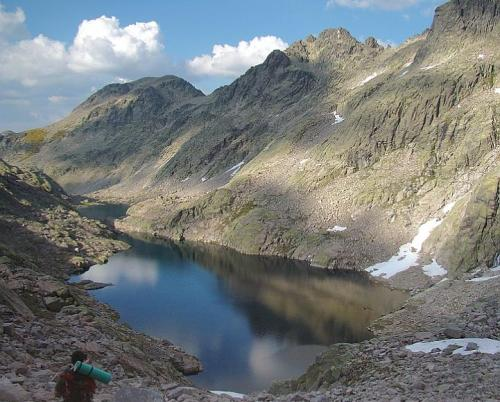

 La sierra de Gredos es una sierra de España perteneciente al Sistema Central, situada entre las provincias de Ávila, Cáceres, Madrid y Toledo. SU máxima altitud se da en la provincia de Ávila en el pico del Moro Almanzor a 2.592m, que divide los términos municipales de Zarpadiel de la Ribera y Candeleda. Está declarada parque regional. Gredos es una de las sierras más extensas del Sistema Central y está compuesta por cinco valles fluviales: Alto Tormes, Alto Alberche, Tiétar Oriental, Tiétar occidental y la Vera, y Valle del Ambroz.